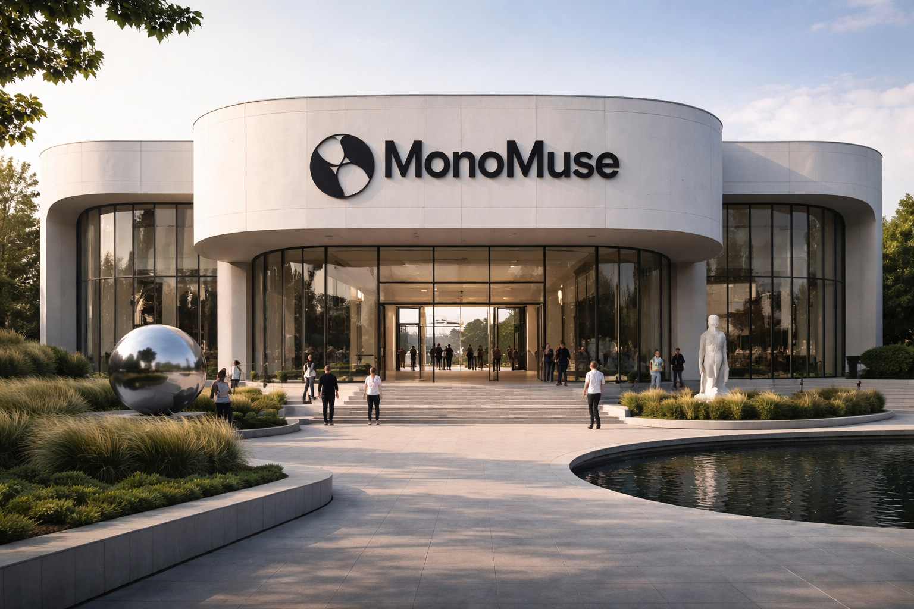

Mission Statement
MonoMuse is dedicated to exploring the power, beauty, and expressive depth of monochrome art. Through thoughtfully curated exhibitions, educational programs, and immersive experiences, the museum invites visitors to discover how a single color palette can reveal complexity, emotion, and innovation across artistic disciplines. MonoMuse strives to inspire curiosity, encourage creative dialogue, and make contemporary and historical monochrome art accessible to diverse audiences.
Milestones
- March 12, 2016 — Founding Concept: The idea for MonoMuse is first proposed by a group of curators and artists interested in creating a museum dedicated exclusively to monochrome art and minimalist visual expression.
- July 8, 2020 — Construction and Collection Development: After several years of fundraising, design, and construction, the MonoMuse building is completed. Curators install the museum’s first large-scale exhibition featuring monochrome works in painting, sculpture, and digital media.
- May 21, 2025 — Major Expansion & Global Artist Residency Launch: MonoMuse celebrates nearly a decade of activity by launching an international monochrome artist residency program and opening additional gallery space dedicated to experimental monochrome installations.
Support the Muse
Become a member today for unlimited access, exclusive previews, and special discounts.
Join NowMake a Gift
Your contribution keeps the arts accessible to everyone. Consider a donation to support our programs.
Give Today